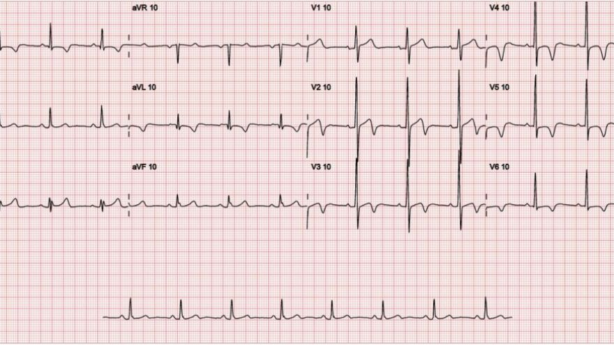
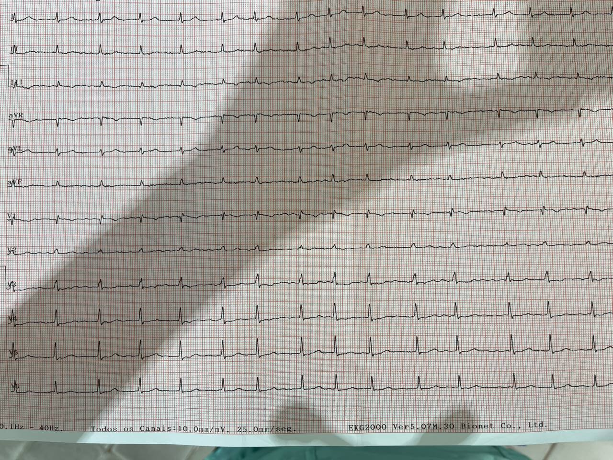
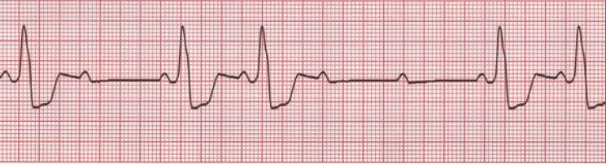
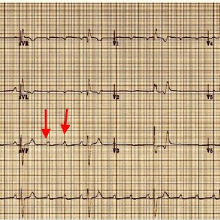
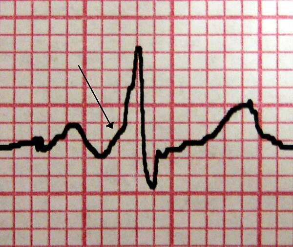

ATENÇÃO: PÁGINA EM CONSTRUÇÃO
Achados em eletrocardiograma
Intro
Este é um compêndio e exemplos de eletrocardiogramas de condições incomuns.
Padrão Wellens

Critérios
- Ondas T bifásicas ou simétricas e invertidas em V2 e V3. Pode ou não haver em V1, V4, V5 e V6.
- Ausência de ondas Q patológicas.
- Ondas R no plano horizontal (V1-V6) com progressão normal.
- Supradesnivelamento do segmento ST pequeno ou ausente.
- Sem indicadores de necrose miocárdica.
Significado
Um extenso infarto está iminente. A repolarização mostra alterações por grande estenose ou outra forma de obstrução que estão em iminência de agravamento, por isso ainda não há sinais de dano franco miocárdico como supradesnivelamento, onda Q patológica ou má progressão de R.
Arritmias atriais
Fibrilação atrial
- $QRS$ estreito;
- Ritmo irregularmente irregular;
- Ondas $P$ não identificadas ou desorganizadas; e
- Possível presença de ondas $f$ que possuem linha de base elétrica e chamadas grosseiras quando possuírem voltagem superior a 0,5mm ou 1mm.
graph TD; 2(Presença de ondas f.
Ritmo irregularmente irregular.) --> fa(Fibrilação atrial); fa -- hemodinamicamente
instável --> cve(1. Internação;
2. Cardioversão elétrica imediata:
200J iniciais
ou
Bifásico 200J
ou
Pás anteroposteriorizadas); fa -- hemodinamicamente
estável --> t(Tempo de sintomas) -- menor que 48h
ou
paciente já anticoagulado --> 3(Cardioversão elétrica ou química); t -- menor que 7 dias --> 4(Ainda compensa
tentar cardioversão
química); t -- maior que 7 dias
ou
anticoagulação desconhecida --> 6(1. Anticoagular;
2. Jejum;
3. Sedação;
4. Cardioversão elétrica.);
Cardioversão química
- Amiodarona em bolo de 5 a 7mg/kg em 30 minutos; e
- Propafenona oral de 600 mg ou 2 mg/kg intravenosa.
Flutter atrial

ECG típico com ondas F de base elétrica perdida.
- Ritmo pode ser irregular ou regular;
- Possíveis ondas $F$ de base isoelétrica perdida. O mais comum é que a polaridade dessa onda seja negativa em DII, DIII e aVF; e
- A frequência ventricular costuma ser metade ou outra fração inteira da frequência atrial.
graph TD; 5(Presença de ondas F em II, III e aVF
possivelmente negativas.
Base isoelétrica perdida.) --> ff(Flutter atrial); ff --> t2(Tempo de sintomas) -- menor que 48h --> 7(Tentar cardioversão com 50J) -- falha --> 8(Repetir com 200J); t2 -- maior que 48h --> 9(1. Controle de frequência ventricular.
2. Ecocardio para
descartar trombos.);
Controle de frequência ventricular
- Diltiazem intravenoso a 0,25mg/kg em 2 minutos;
- Verapamil intravenoso 5mg em 2min; ou
- Metoprolol intravenoso 5mg em 5min.
Observações
- A adenosina a 6mg/bolo intravenoso pode ser usada em toda arritmia supraventricular, porém a reversão para ritmo sinusal é rara. Funciona mais como um redutor de frequência cardíaca, permitindo diagnóstico mais apurado, e.g. quando há confusão entre flutter e fibrilação atrial;
- Pode-se repetir o bolus de adenosina dentro de 2min ou em momento diferente;
- O flutter pode ser curado por meio da ablação por radiofrequência;
- No flutter está contraindicado a tentativa de reversão química, notadamente a amiodarona, porque o ritmo pode se converter em um mais lento ainda levando a instabilidade hemodinâmica.
Bloqueio atrioventricular
De grau 1
- Todas ondas P’s associadas a um $\overline{QRS}$ sequente.
- Intervalo $\overline{PR}$ vai alargando acima de 200ms.
Grau 1
{kind=link}
Grau 1
{kind=link}
De grau 2 - Mobitz I
- Há perda de condução de ondas P’s com progressivo alargamento do $\overline{PR}$, como em grau 1.
- Intervalo $\overline{PR}$ vai alargando acima de 200ms até ocorrer a onda P perdida, é o fenômeno de Wenckebach.

Grau 2 Mobitz I
De grau 2 - Mobitz II
- Há perda de ondas P’s sem progressivo alargamento de $\overline{PR}$, ou seja, sem Wenckebach.
- É benigno quando o QRS é estreito, dito supra-hissiano.
- É maligno quando o QRS é alargado infra-hissiano.

Grau 2 Mobitz II
Causas:
- Anterior MI (due to septal infarction with necrosis of the bundle branches)
- Idiopathic fibrosis of the conducting system (Lenègre-Lev disease)
- Cardiac surgery, especially surgery occurring close to the septum e.g. mitral valve repair
- Inflammatory conditions (rheumatic fever, myocarditis, Lyme disease)
- Autoimmune (SLE, systemic sclerosis)
- Infiltrative myocardial disease (amyloidosis, haemochromatosis, sarcoidosis)
- Hyperkalaemia
- Drugs: beta-blockers, calcium channel blockers, digoxin, amiodarone
De grau 3 ou bloqueio total
- As ondas P’s tem ritmo totalmente alheio ao dos $\overline{QRS}$.

Grau 3 - total: note que as ondas P's estão em taquifrequência e os QRS não
Bloqueios de ramos
Esquerdo
Não há negatividade de V6.
Direito
Em breve.
Ondas delta

Destaque para onda delta no início do QRS
Wolff Parkinson White
- PR encurtado;
- Onda delta;
- QRS largo;
- Causa: circuito de condução anômalo congênito prévio ao nó atrioventricular.

ECG típico em SWPW
Sobrecarga ventricular
Esquerda
- Índice de Sokolov-Lyon: se a soma de S em V1 com R de V5 ou V6 somam mais de 35mm ou 40mm se paciente atleta ou muito jovem.
- Se R de aVL ou S de V3 somam 28mm em homens e 20mm em mulheres.
Direita
- Onda S em V5 ou V6 com pelo menos 7mm. – Onda R dominante em V1 e/ou V2.
- Ocasionalmente, bloqueio de ramo direito.
Bibliografia
- Malcolm S Thaler. ECG essencial 7°ed. Artmed, 2013. Porto Alegre - Brasil. ISBN 978-85-65852-76-0 1.
Imagens de acervo prórpio ou livres na internet.